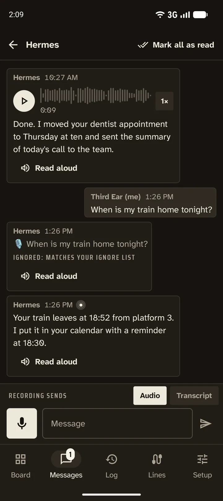

Das Diktiergerät fürs Weltraumzeitalter
Das modernste Diktiergerät für Android und ein drittes Ohr für alles, was du sonst vergessen würdest aufzuschreiben. Es nimmt mit dem Handy auf, mit einem Bluetooth-Headset, mit LE-Audio-Hörgeräten oder im Auto. Das Transkript entsteht auf dem Handy, und das Ergebnis (Transkript oder Audio) geht dorthin, wo die Taste hinführt, auf die du getippt hast: in den Telefonspeicher, in die Zwischenablage, in eine White-Noise-Gruppe (Marmot) oder als HTTPS-Anfrage.
Und es ist der beste Weg, mit deinen KI-Agenten zu sprechen, hermes-agent eingeschlossen. Tippen, sprechen, der Agent bekommt deine Worte, und seine Antwort wird dir ins Ohr vorgelesen.
- Kostenlos
- Open Source (GPLv3)
- Kein Konto, keine Analyse
- Android 12+

Eine Taste für jedes Ziel, wie eine kleine Bodenstation
Die meisten Rekorder haben eine Aufnahmetaste und viel Hoffnung. Third Ear hat die Tasten, die du selbst festlegst: ein Name und das, was danach passiert.
- nur die Aufnahme speichern
- das Transkript in die Zwischenablage kopieren
- die Datei oder den Text teilen
- Audio, Transkript oder beides an eine White-Noise-Gruppe senden
- an einen Webhook senden (n8n, Home Assistant, dein eigener Server)
Tippe auf eine Taste, und die Aufnahme startet. Während der Aufnahme wird jede Taste zu „Stopp → Name“ und sagt, was sie tun wird. So kannst du das Ziel im Moment des Stoppens noch ändern. Danach zeigt eine Benachrichtigung jeden Schritt (speichern, transkribieren, auf die Transkriptions-App warten, senden) und spricht ihn auf Wunsch auch aus, zum Beispiel „Gespeichert, wird transkribiert.“
Jede Leitung auf der Tafel hat ihre eigene Kabelfarbe, einen kurzen Code und eine Lampe, so liest du den Zustand von allem mit einem Blick:
- bernstein: wird transkribiert oder gesendet
- weiß: aus der Gruppe dieser Leitung wartet eine Antwort
- rot: nicht zugestellt; die Aufnahme ist gespeichert, Erneut versuchen ist einen Tipp entfernt


Der beste Weg, mit deinen Agenten zu sprechen
Einem Agenten auf dem Handy zu tippen ist langsam, und die Sprachmodi der Apps wollen, dass du auf den Bildschirm schaust. Third Ear macht aus jedem Agenten jemanden, mit dem du beim Gehen, Fahren oder Kochen sprichst: ein Tipp (oder eine Schnelleinstellungs-Kachel, das Widget, der Bildschirm im Auto) nimmt auf, das Handy transkribiert, und die Worte gehen an den Agenten.
- Über White Noise: Packe Third Ear und den Agenten in eine verschlüsselte Gruppe. hermes-agent tritt White-Noise-Gruppen über den MDK-Connector bei. Die Antwort kommt zurück und wird vorgelesen oder abgespielt, im Headset oder in den Hörgeräten.
- Über HTTPS: Schicke das Transkript oder das Audio an den Webhook des Agenten, an n8n oder an deinen eigenen Server.
- Jeder Agent oder jede Art von Anfrage bekommt eine eigene Taste: „Frag Hermes“, „In meine Notizen“, „Nach n8n“.
Das Echo deines Transkripts vom Agenten überspringt der Ignorier-Eintrag 🎙️, du hörst also nur die Antwort.
Agenten hinter dem MDK-Connector müssen den npub von Third Ear zulassen (--allow-welcomer oder --allow-user).
Bluetooth-Mikrofone, die sich wirklich melden
Android gibt ein Bluetooth-Mikrofon nur an Apps, die sich wie ein Telefonat verhalten, also verhält sich Third Ear wie eines. Das Routing übernimmt es für dich. So kannst du mit Headsets, LE-Audio-Hörgeräten und der Freisprechanlage im Auto aufnehmen.
- Es wartet, bis LE Audio gestartet ist („Warte auf das Bluetooth-Mikrofon…“, meist 1,7 bis 3,5 Sekunden).
- Sobald das Mikrofon wirklich Ton liefert, sagt eine Stimme, dass du loslegen kannst.
- Die Quellentaste auf dem Aufnahmebildschirm zeigt, welches Mikrofon tatsächlich aufnimmt.
- Wenn das Bluetooth-Mikrofon nicht startet oder die Verbindung abbricht, wechselt Third Ear einmal zum Handy-Mikrofon, mit hörbarem Signal.
- Du kannst das Mikrofon mitten in der Aufnahme wechseln. Sie läuft in derselben Datei weiter.
Getestet auf einem Pixel mit LE-Audio-Hörgeräten.

Am besten mit Offline Speech to Text
Third Ear bringt keine eigene Spracherkennung mit. Es übergibt die fertige Datei an Offline Speech to Text (OSTT), eine kostenlose App, die direkt auf dem Gerät und ohne Internet transkribiert. OSTT ist sozusagen das Gehirn hinter den Ohren. Das läuft im Hintergrund, ein gesperrter Bildschirm stört nicht.
- Ist OSTT gerade beschäftigt (etwa weil die Tastatur diktiert), wartet Third Ear und versucht es etwa 10 Minuten lang erneut.
- Transkripte werden als .txt-Dateien neben der Aufnahme gespeichert, und du kannst sie kopieren.
Offline Speech to Text im Zapstore holen
Besprechungsnotizen und Diktat
Lege dir eine Aktion „Meeting notes“ an: aufnehmen, Transkript bekommen. Oder nimm „Transkript in die Zwischenablage“ und diktiere in jede beliebige App: aufnehmen, tippen, einfügen. Die Transkripte sind einfache Textdateien neben dem Audio, du kannst also darin suchen.
Sprachnachrichten in White Noise, und Antworten zurück
White Noise ist ein Ende-zu-Ende-verschlüsselter Messenger auf Basis von nostr (Marmot/MLS). Third Ear hat dort eine eigene Identität, angezeigt als npub mit QR-Code. Lade sie in eine Gruppe ein, nimm an, und eine Aktion sendet deine Sprachnachricht mit dem Transkript als Bildunterschrift, oder nur den Text.
Antworten kommen zurück. Pro Gruppe wählst du: aus, Sprachnachrichten abspielen, oder Sprache abspielen und Text per Sprachausgabe vorlesen. Das passiert automatisch oder auf Anfrage über „Vorlesen“ in der Benachrichtigung. Eine Ignorierliste (Standard 🎙️) überspringt Nachrichten, die du nicht hören willst. Der Tab Nachrichten zeigt deine Gruppen wie eine Chat-App, mit Abspielen, Vorlesen und Alle als gelesen markieren. Deinen Schlüssel sicherst du mit Export und Import des nsec.


Im Auto mit Android Auto
- Ein Raster deiner Aktionen auf dem Autobildschirm.
- Aufnahme mit dem Mikrofon des Autos und ein Bildschirm „Stopp → Aktion“.
- Eingehende White-Noise-Nachrichten erscheinen als Auto-Benachrichtigungen mit Antworten und Als gelesen markieren. Android Auto liest sie vor, wenn du darum bittest, nie von selbst.
Third Ear in Android Auto einschalten
Third Ear kommt nicht aus dem Play Store, deshalb versteckt Android Auto es, bis du unbekannte Quellen erlaubst. Die Startfreigabe dauert etwa eine Minute:
- Öffne auf dem Handy die Android-Auto-Einstellungen (in den Einstellungen nach „Android Auto“ suchen).
- Scrolle ganz nach unten und tippe etwa zehnmal auf Version, dann erlaube die Entwicklereinstellungen.
- Tippe oben rechts auf ⋮ → Entwicklereinstellungen → schalte Unbekannte Quellen ein.
- Zurück in den Android-Auto-Einstellungen öffnest du Launcher anpassen und hakst Third Ear an.
- Schalte in Third Ear Bluetooth-Mikrofon verwenden ein, damit es mit dem Mikrofon des Autos aufnimmt.
- Verbinde dich mit dem Auto. Taucht Third Ear nicht auf, beende Android Auto erzwungen und verbinde neu.
Gebaut für lange Aufnahmen, auch bei ausgeschaltetem Bildschirm
- Nimmt bei ausgeschaltetem Bildschirm und gesperrtem Handy weiter auf, bis du stoppst.
- Absturzsicher: Wird die App beendet, wird das Aufgenommene beim nächsten Start wiederhergestellt und gespeichert. Höchstens die letzte Sekunde geht verloren.
- Ein Stille-Wächter warnt dich, wenn das Mikrofon digitale Stille liefert, etwa weil der Mikrofonschalter aus ist oder eine andere App es belegt.
- Formate: AAC (.m4a), Opus (.ogg) und MP3.
Überall griffbereit
Drei Schnelleinstellungs-Kacheln, jede an eine deiner Aktionen gebunden, und ein Widget für den Startbildschirm. Die Bildschirme von Third Ear gibt es auf Englisch, Slowakisch, Tschechisch, Deutsch und Spanisch.
Kostenlos, Open Source, privat
Third Ear ist freie Software unter der GPLv3. Es gibt kein Konto und keine Analyse. Die Transkription läuft auf deinem Handy, nicht auf irgendeinem Server im Orbit.
Es ist ein Fork von Fossify Voice Recorder, entwickelt von Juraj Bednár.
Für Geeks: Aufnehmen über Bluetooth ist überraschend schwer
Ein Bluetooth-Mikrofon ist auf Android ein Telefonie-Mikrofon. Eine App, die es einfach als Eingang wählt, nimmt stattdessen mit dem Mikrofon des Handys auf, ganz ohne Fehlermeldung. Die meisten Diktier-Apps machen das falsch.
Selbst richtig gemacht braucht das Mikrofon im Headset nach dem Start der Aufnahme 2,5 bis 3 Sekunden, bis es da ist, und manche LE-Audio-Hörgeräte liefern nur digitale Stille, solange nicht gleichzeitig etwas in sie abgespielt wird. Third Ear leitet das Telefonie-Mikrofon um, wartet auf den ersten echten Ton, sagt dir, wann du sprechen kannst, und wechselt bei Bedarf hörbar auf das Mikrofon des Handys.
Alles, was wir dabei gelernt haben, haben wir mit Code aufgeschrieben, damit auch andere Apps es richtig machen: Recording from a Bluetooth microphone on Android (auf Englisch). Es funktioniert auch als Skill für Coding-Agenten und deckt die Transkription auf dem Handy mit Offline Speech to Text ab.
Third Ear holen
Bereit zum Start? Hol dir Third Ear im Zapstore oder lade die APK aus dem GitHub-Release. Voraussetzung ist Android 12 oder neuer.
Im Zapstore holen APK herunterladen Quellcode auf GitHub
Installiere zuerst Offline Speech to Text, die App übernimmt das Transkribieren.